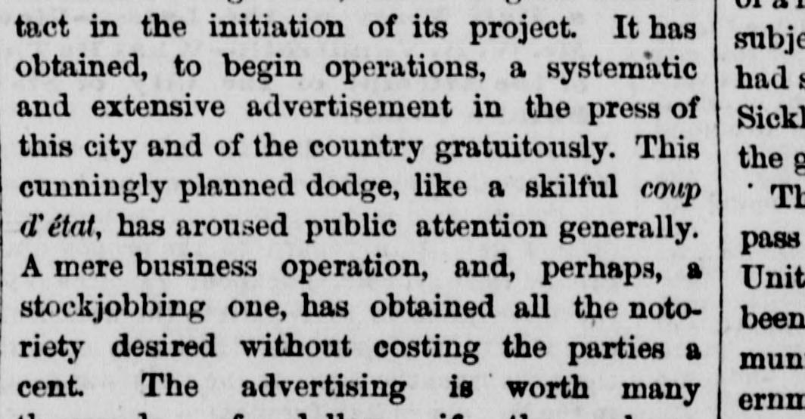
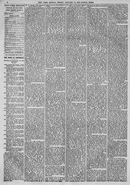

This 1 cunningly planned dodge, like a skilful coup d’état, hasEste ardid, astutamente planeado, como un hábil golpe de Estado, ha
The New York Herald. New York [N.Y.], January 17, 1873. Page 6. View the originalVer el original


See the full pageVer la página completaAccording to The New York Herald on January 17, 1873, a business or stock-jobbing scheme involving St. Domingo gained thousands of dollars in free advertising through press coverage. The newspaper stated that while American enterprise abroad is acceptable provided the government is not dragged into defending land grants, the President must define the administration's position to prevent annexation or complications. Finally, the article expressed strong opposition to annexing St. Domingo, describing it as a distant tropical island with little trade and a sparse population, while asserting that the United States already has sufficient territory.Según The New York Herald del 17 de enero de 1873, un tinglado especulativo de bolsa centrado en Santo Domingo cosechó miles de dólares en publicidad gratuita mediante la cobertura periodística. El diario opinó que, si bien la iniciativa privada estadounidense en el exterior es lícita con tal de que no comprometa al gobierno en la defensa de mercedes de tierras, el presidente debe deslindar la postura oficial para precaver anexiones o conflictos. Finalmente, el artículo expresó una enérgica repulsa a incorporar a Santo Domingo, caracterizándola como una remota isla tropical de precario comercio y escaso vecindario, concluyendo que los Estados Unidos gozan ya de suficiente extensión territorial.
FULL TEXT:TEXTO COMPLETO:
These facts may create a suspicion that General Grant is not only "deeply interested" in this private enterprise of American citizens—as Mr. Hazard, the secretary of the company, says, though not in a personal sense, we presume—but that this scheme is favored by him with the ulterior view of bringing about annexation in an indirect manner—thus accomplishing his long-cherished object which the Senate mercilessly squelched. We do not think the President would act in such a surreptitious manner. We believe he honestly thinks that the possession of the territory of St. Domingo, or the Samana portion of it, by an American company, would be a benefit to the trade of the country. This, we imagine, is the "deep interest" he takes in the project, and for no other reason. Still, the American people will be disposed to believe that the President has the ulterior object of annexation in view, and he should at once remove such an impression by disavowing any purpose of the nature.Estos hechos pueden crear una sospecha de que el general Grant no solo está «profundamente interesado» en esta empresa privada de ciudadanos estadounidenses—como dice el Sr. Hazard, el secretario de la compañía, aunque no en un sentido personal, presumimos—sino que este plan es favorecido por él con la mira ulterior de lograr la anexión de manera indirecta—cumpliendo así su objeto largamente anhelado que el Senado aplastó sin piedad. No creemos que el Presidente actuaría de manera tan subrepticia. Creemos que honestamente piensa que la posesión del territorio de Santo Domingo, o la porción de Samaná de él, por una compañía estadounidense, sería un beneficio para el comercio del país. Esta, presumimos, es el «profundo interés» que toma en el proyecto, y por ninguna otra razón. Aun así, el pueblo estadounidense estará dispuesto a creer que el Presidente tiene en vista el objeto ulterior de la anexión, y debería de inmediato remover tal impresión desautorizando cualquier propósito de esa naturaleza.
The new St. Domingo Company, like the old one, if, indeed, it be not the old one revived and reorganized, shows a great deal of tact in the initiation of its project. It has obtained, to begin operations, a systematic and extensive advertisement in the press of this city and of the country gratuitously. This cunningly planned dodge, like a skilful coup d'etat, has aroused public attention generally. A mere business operation, and, perhaps, a stockjobbing one, has obtained all the notoriety desired without costing the parties a cent. The advertising is worth many thousands of dollars if the scheme is worth anything at all. Should the company continue to act with the same skill it may get some value out of St. Domingo, or out of its stocks, unless insuperable obstacles areLa nueva Compañía de Santo Domingo, como la vieja, si en efecto no es la vieja revivida y reorganizada, muestra mucha habilidad en la iniciación de su proyecto. Ha obtenido, para comenzar operaciones, un anuncio sistemático y extenso en la prensa de esta ciudad y del país gratuitamente. Este ardid hábilmente planeado, como un hábil golpe de estado, ha excitado la atención pública generalmente. Una mera operación de negocios, y, quizás, de especulación de tierras, ha obtenido toda la notoriedad deseada sin costar a las partes un centavo. El anuncio vale muchos miles de dólares si el plan vale algo en absoluto. Si la compañía continúa actuando con la misma habilidad puede sacar algún valor de Santo Domingo, o de sus acciones, a menos que obstáculos insuperables sean